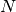
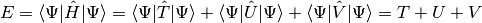
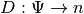
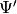
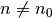
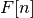
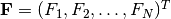

Density Functional Theory (DFT)¶
Many Body Schrödinger Equation¶
We use (Hartree) atomic units in this whole section about DFT. We use the Born-Oppenheimer approximation, which says that the nuclei of the treated atoms are seen as fixed. A stationary electronic state (for  electrons) is then described by a wave function fulfilling the many-body Schrödinger equation
where
is the kinetic term,
is the electron-electron interaction term and
is the interaction term between electrons and nuclei, where are positions of nuclei and the number of nucleons in each nucleus (we are using atomic units). So for one atomic calculation with the atom nucleus in the origin, we have just .
gives the probability density of measuring the first electron at the position , the second at , dots and the Nth electron at the position . The normalization is such that . The is antisymmetric, i.e. etc.
Integrating over the first electrons is the probability density that the -th electron is at the position . Thus the probability density that any of the N electrons (i.e the first, or the second, or the third, dots, or the -th) is at the position is called the particle (or number) density and is therefore given by:
![n({\bf r})= \int \Psi^*({\bf r},{\bf r}_2,\cdots,{\bf r}_N) \Psi ({\bf r},{\bf r}_2,\cdots,{\bf r}_N) \,\d^3 r_2\,\d^3 r_3\cdots\d^3 r_N+
+\int \Psi^*({\bf r}_1,{\bf r},\cdots,{\bf r}_N) \Psi ({\bf r}_1,{\bf r},\cdots,{\bf r}_N) \,\d^3 r_1\,\d^3 r_3\cdots\d^3 r_N+\cdots
+\int \Psi^*({\bf r}_1,{\bf r}_2,\cdots,{\bf r}) \Psi ({\bf r}_1,{\bf r}_2,\cdots,{\bf r}) \,\d^3 r_1\,\d^3 r_2\,\d^3 r_3\cdots\d^3 r_{N-1}=
=\int(\delta({\bf r}-{\bf r}_1)+\delta({\bf r}-{\bf r}_2)+\cdots+\delta({\bf r}-{\bf r}_N))
\Psi^*({\bf r}_1,{\bf r}_2,\cdots,{\bf r}_N) \Psi ({\bf r}_1,{\bf r}_2,\cdots,{\bf r}_N) \,\d^3 r_1\,\d^3 r_2\,\d^3 r_3\cdots\d^3 r_{N}=
=\sum_{i=1}^N\int \braket{\Psi|{\bf r}_1,{\bf r}_2,\cdots,{\bf r}_N}\delta({\bf r}-{\bf r}_i) \braket{{\bf r}_1,{\bf r}_2,\cdots,{\bf r}_N|\Psi} \,\d^3 r_1\,\d^3 r_2\,\d^3 r_3\cdots\d^3 r_{N}=
=N\int \braket{\Psi|{\bf r}_1,{\bf r}_2,\cdots,{\bf r}_N}\delta({\bf r}-{\bf r}_1) \braket{{\bf r}_1,{\bf r}_2,\cdots,{\bf r}_N|\Psi} \,\d^3 r_1\,\d^3 r_2\,\d^3 r_3\cdots\d^3 r_{N}=](../../_images/math/ab1a76695112d629c540e8f63ae28c96a478656c.png)
(1)
Thus gives the number of particles in the region of integration . Obviously .
Note that the number density and potential in the Schroedinger equation is related to the electron charge density and electrostatic potential energy by:
where is the particle elementary charge, which for electrons is in atomic units. The amount of electronic charge in the region is given by:
The energy of the system is given by
(2)
where
![T=\braket{\Psi|\hat T|\Psi}=\sum_i^N\int \Psi^*({\bf r_1},{\bf r_2},\cdots,{\bf r_N})(-\half\nabla_i^2) \Psi({\bf r_1},{\bf r_2},\cdots,{\bf r_N})\,\d^3 r_1\,\d^3 r_2\cdots\d^3 r_N
U=\braket{\Psi|\hat U|\Psi}
V=\braket{\Psi|\hat V|\Psi}=\sum_i^N\int \Psi^*({\bf r_1},{\bf r_2},\cdots,{\bf r_N})v({\bf r_i}) \Psi({\bf r_1},{\bf r_2},\cdots,{\bf r_N})\,\d^3 r_1\,\d^3 r_2\cdots\d^3 r_N=
=\sum_i^N\int \Psi^*({\bf r_1},{\bf r_2},\cdots,{\bf r_N})v({\bf r_1}) \Psi({\bf r_1},{\bf r_2},\cdots,{\bf r_N})\,\d^3 r_1\,\d^3 r_2\cdots\d^3 r_N=
=N\int \Psi^*({\bf r_1},{\bf r_2},\cdots,{\bf r_N})v({\bf r_1}) \Psi({\bf r_1},{\bf r_2},\cdots,{\bf r_N})\,\d^3 r_1\,\d^3 r_2\cdots\d^3 r_N=](../../_images/math/d0eaa57f46f5676922f7346b686df81ab80c096d.png)
(3)
It needs to be stressed, that  generally is not a functional of
generally is not a functional of  alone, only the
alone, only the ![V[n]](../../_images/math/16a3ec972c7a23ad2299075d3ca4b8045b71be9c.png) is. In the next section we show however, that if the
is. In the next section we show however, that if the
 is a ground state (of any system), then becomes a functional
of .
is a ground state (of any system), then becomes a functional
of .
The Hohenberg-Kohn Theorem¶
The Schrödinger equation gives the map
where is the ground state. C is bijective (one-to-one correspondence),
because to every  we can compute the corresponding from Schrödinger
equation and two different and
we can compute the corresponding from Schrödinger
equation and two different and  (differing by more than a constant)
give two different , because if and gave the same , then
by substracting
(differing by more than a constant)
give two different , because if and gave the same , then
by substracting
from
we would get , which is a contradiction with the assumption that and differ by more than a constant.
Similarly, from the ground state wavefunction we can compute the charge
density giving rise to the map

which is also bijective, because to every we can compute from
(1) and two different and  give two different
and  , because different and give
, because different and give
adding these two inequalities together gives
which for gives , which is nonsense, so .
So we have proved that for a given ground state density
(generated by a potential  ) it is possible to calculate the
corresponding ground state wavefunction
) it is possible to calculate the
corresponding ground state wavefunction  , in other words, is a unique functional of :
, in other words, is a unique functional of :
so the ground state energy is also a functional of
We define an energy functional
(4)
where is any ground state wavefunction (generated by an
arbitrary potential), that is, is a ground state density belonging to an
arbitrary system. which is generated by the potential can then be
expressed as
and for  we have (from the Ritz principle)
and one has to minimize the functional :
(5)
The term
in (4) is universal in the sense that it doesn’t depend on . It can be proven [DFT], that  is a functional of for
degenerated ground states too, so (5) stays true as well.
The ground state densities in (4) and (5) are called pure-state v-representable because they are the densities of (possible degenerate) ground state of the Hamiltonian with some local potential . One may ask a question if all possible functions are v-representable (this is called the v-representability problem). The question is relevant, because we need to know which functions to take into account in the minimization process (5). Even though not every function is v-representable [DFT], every density defined on a grid (finite of infinite) which is strictly positive, normalized and consistent with the Pauli principle is ensemble v-representable. Ensemble v-representation is just a simple generalization of the above, for details see [DFT].
The functional in (5) depends on the particle number ,
so in order to get , we need to solve the variational formulation
so
(6)
Let the be the solution of (6) with a particle number and the energy :
The Lagrangian multiplier  is the exact chemical potential of the system
is the exact chemical potential of the system

becuase
so
The Kohn-Sham Equations¶
Consider an auxiliary system of noninteracting electrons (noninteracting gas):

the Schrödinger then becomes:
and the total energy is:
where
So:
The total energy is the sum of eigenvalues (energies of the individual independent particles) as expected. From the last equation it follows:
![T_s[n] = \sum_i\braket{\psi_i|-\half\nabla^2|\psi_i}
= \sum_i \epsilon_i -\int v_s({\bf r})n({\bf r})\d^3r](../../_images/math/15091c09e66dfa095676d249c264a2d0d95399f7.png)
In other words, the kinetic energy of the noninteracting particles is equal to the sum of eigenvalues minus the potential energy coming from the total effective potential used to construct the single particle orbitals .
From (6) we get
(7)
Solution to this equation gives the density .
Now we want to express the energy in (2) using  and
for convenience, where is the classical electrostatic interaction energy
of the charge distribution , defined using following relations
- we start with a Poisson equation in atomic units
and
for convenience, where is the classical electrostatic interaction energy
of the charge distribution , defined using following relations
- we start with a Poisson equation in atomic units
and substitute , and we use the fact that in atomic units:
or equivalently by expressing using the Green function:
(8)
and finally is related to using:
so we get:
Using the rules for functional differentiation, we can check that:
Using the above relations, we can see that
So from (4) we get
(9)
The rest of the energy is denoted by  and it is called is
the exchange and correlation energy functional. From (6)
and it is called is
the exchange and correlation energy functional. From (6)
From (8) we have
from (3) we get
we define
(10)
so we arrive at
(11)
Solution to this equation gives the density . Comparing (11) to
(7) we see that if we choose
(12)
then . So we solve the Kohn-Sham equations of this auxiliary non-interacting system
(13)
which yield the orbitals that reproduce the density of the original interacting system
(14)
The sum is taken over the lowest energies. Some of the can be
degenerated, but it doesn’t matter - the index  counts every eigenfunction
including all the degenerated. In plain words, the trick is in realizing, that
the ground state energy can be found by minimizing the energy functional
(4) and in rewriting this functional into the form (9),
which shows that the interacting system can be treated as a noninteracting one
with a special potential.
counts every eigenfunction
including all the degenerated. In plain words, the trick is in realizing, that
the ground state energy can be found by minimizing the energy functional
(4) and in rewriting this functional into the form (9),
which shows that the interacting system can be treated as a noninteracting one
with a special potential.
The XC Term¶
The exchange and correlation functional
can always be written in the form
where the is called the XC energy density. The XC potential is defined as:
![V_{xc}({\bf r};n) = {\delta E_{xc}[n]\over\delta n({\bf r})}
= \epsilon_{xc}({\bf r};n)+ \int n({\bf r}')
{\delta \epsilon_{xc}({\bf r}';n)\over\delta n({\bf r})}\d^3r'](../../_images/math/8008cfcefbeab60ff49a61f0098fd174c898746c.png)
Total Energy¶
We already derived all the necessary things above, so we just summarize it here. The total energy is given by:
where
This is the correct, quadratically convergent expression for the total energy.
We use the whole input potential and its associated
eigenvalues to calculate the kinetic energy , this follows
from the derivation of the expression for . Then we use the calculated
charge density to express , and .
If one is not careful about the potential associated with the eigenvalues, i.e., confusing with , one gets a slowly converging formula for the total energy. By expanding using (12):
So is equal to:
![T_s[n] = \sum_i \epsilon_i -\int v_s({\bf r})n({\bf r})\d^3r =
= \sum_i \epsilon_i - 2 E_H[n] - \int V_{xc} n({\bf r})\d^3 r - V[n]](../../_images/math/170c36a754485f793ebef6e97ebf03d73e21234b.png)
And then the slowly converging form of total energy is:
The reason it is slowly converging is because the new formula for kinetic energy is mixing with , so it is not as precise (see above) and converges much slower with SCF iterations. Once self-consistency has been achieved (i.e. ), the two expressions for total energy are equivalent.
XC Approximations¶
All the expressions above are exact (no approximation has been made so far). Unfortunately, no one knows exactly (yet). As such, various approximations for it exist.
LDA¶
The most simple approximation is the local density approximation (LDA), for which the xc energy density at is taken as that of a homogeneous electron gas (the nuclei are replaced by a uniform positively charged background, density ) with the same local density:
The xc potential defined by (10) is then
which in the LDA becomes
(15)
The xc energy density  of the homogeneous gas can be
computed exactly:
of the homogeneous gas can be
computed exactly:
where the is the electron gas exchange term given by
the rest of is hidden in for which
there doesn’t exist an analytic formula, but the correlation energies are known
exactly from quantum Monte Carlo (QMC) calculations by Ceperley and
Alder [pickett]. The energies were fitted by Vosko, Wilkes and Nussair
(VWN) with and they got accurate results with errors less
than in , which means that
is virtually known exactly. VWN result:
where , , , ,
 , (note that the value of
, (note that the value of  is wrong in
[pickett]), and is the electron gas
parameter, which gives the mean distance between electrons (in atomic units):
is wrong in
[pickett]), and is the electron gas
parameter, which gives the mean distance between electrons (in atomic units):
The xc potential is then computed from (15):
Some people also use Perdew and Zunger formulas, but they give essentially the same results. The LDA, although very simple, is surprisingly successful. More sophisticated approximations exist, for example the generalized gradient approximation (GGA), which sometimes gives better results than the LDA, but is not perfect either. Other options include orbital-dependent (implicit) density functionals or a linear response type functionals, but this topic is still evolving. The conclusion is, that the LDA is a good approximation to start with, and only when we are not satisfied, we will have to try some more accurate and modern approximation.
RLDA¶
Relativistic corrections to the energy-density functional (RLDA) were proposed by MacDonald and Vosko:
where

We now calculate :
(16)
where the derivative can be evaluated as follows:
And in exactly the same manner:
So we can write

where
where we used the derivative of , which after a tedious, but straightforward differentiation is:
Plugging this back in, we get:
![V_x^{RLD} = V_x^{LD}\left(R+{1\over4}\beta{\d R\over\d\beta}\right)
=
=
V_x^{LD}\left(1-{3\over 2}A^2 +{1\over4}\beta(-6A)
\left({1\over\mu} - {A\over\beta}\right)
\right)
=
=
V_x^{LD}\left(1-{3\over 2}A^2 + {6\over4} A^2-{6\over4}\beta {A\over\mu}
\right)
=
=
V_x^{LD}\left(1-{3\over2}{\beta\over\mu} A
\right)
=
=
V_x^{LD}\left(1-{3\over2}{\beta\over\mu} \left(
\beta\mu - \log(\beta+\mu) \over \beta^2\right)
\right)
=
=
V_x^{LD}\left(1-{3\over2} \left(
\beta\mu - \log(\beta+\mu) \over \beta\mu\right)
\right)
=
= V_x^{LD}\left({3\log(\beta+\mu) \over 2\beta\mu}-\half\right)](../../_images/math/c073207826149998bbc88b77e3d4475409ac1ff1.png)
For  we get , and as expected, because
we get , and as expected, because
Code:
>>> from sympy import limit, var, sqrt, log
>>> var("beta")
beta
>>> limit((beta*sqrt(1+beta**2) - log(beta+sqrt(1+beta**2)))/beta**2, beta, 0)
0
Radial DFT Problem¶
Kohn-Sham Equations¶
For spherically symmetric potentials, we write all eigenfunctions as:
and we need to solve the following Kohn-Sham equations:
With normalization:
For Schroedinger equation, the charge density is calculated by adding all “(n, l, m)” states together, counting each one twice (for spin up and spin down):
where we have introduced the occupation numbers  by
by
Normalization of the charge density is:
So we can see, that it must hold:
where  is the atomic number (number of electrons), and as such, are
indeed the occupation numbers (integers). The factor is
explicitly factored out, as it cancels with the spherical harmonics:
assuming all
is the atomic number (number of electrons), and as such, are
indeed the occupation numbers (integers). The factor is
explicitly factored out, as it cancels with the spherical harmonics:
assuming all  states are occupied, this can be simplified to:
states are occupied, this can be simplified to:
We can also use this machinery to prescribe “chemical occupation numbers”, that
don’t necessarily correspond to the DFT ground state. For example for  atom
we get:
atom
we get:
By summing all these , we get 92 as expected:

But this isn’t the DFT ground state, because some KS energies are skipped, for example there is only one state for , , but there are nine more states with the same energy — instead two more states are occupied in , , but those have higher energy. So this corresponds to excited DFT state, strictly speaking not physically valid in the DFT formalism, but in practice this approach is often used. One can also prescribe fractional occupation numbers (in the Dirac case).
Total Energy¶
The total energy is given by:
where
![T_s[n] = \sum_{nl} f_{nl}\epsilon_{nl}
-\int (V_H(r) + V_{xc}(r) + v(r))_{in} n(r) \d^3 r
=
= \sum_{nl} f_{nl}\epsilon_{nl}
-\int \left(V_H(r) + V_{xc}(r) -{Z\over r}\right)_{in} n(r) \d^3 r
E_H[n] = \half\int V_H(r) n(r) \d^3r
E_{xc}[n]=\int \epsilon_{xc}(r;n) n(r) \d^3r
V[n]=\int v(r) n(r) \d^3r = -\int {Z\over r} n(r) \d^3r](../../_images/math/7b0ed3f3f12d5864f72bed4012bf08be06cfffe6.png)
doing the integrals a bit we get:
We can also express everything using the charge density :
DFT As a Nonlinear Problem¶
The task is to find such a charge density , so that all the equations below
hold (e.g. are self-consistent):
This is a standard nonlinear problem, except that the Jacobian is dense, as shown below.
Reformulation¶
Let’s write everything in terms of  explicitly:
explicitly:
Now we can write everything as just one (nonlinear) equation:
FE Discretization¶
The correspondig discrete problem has the form
where
Here is the vector
of unknown coefficients for the -th wavefunction . Our equation
can then be written in the compact form
where  with
Jacobian¶
The Jacobi matrix has the elements:
The only possible dense term is:
![{\partial\over\partial y_k^{(s)}}\int_\Omega \int_\Omega {
\sum_{m=1}^4 \phi_m^2(x')
\over|x' - x|}\d x'\,\phi_n(x) v_i(x) \d x =
=
{\partial\over\partial y_k^{(s)}}\int_\Omega \int_\Omega {
\sum_{m=1}^4 \left(\sum_{j=1}^N y_j^{(m)} v_j(x')\right)^2
\over|x' - x|}\d x'\, \left(\sum_{j=1}^N y_j^{(n)} v_j(x)\right) v_i(x) \d x =
=
\int_\Omega \int_\Omega {
2 \left(\sum_{j=1}^N y_j^{(s)} v_j(x')\right)v_k(x')
\over|x' - x|}\d x'\, \left(\sum_{j=1}^N y_j^{(n)} v_j(x)\right) v_i(x) \d x +
+
\int_\Omega \int_\Omega {
\sum_{m=1}^4 \left(\sum_{j=1}^N y_j^{(m)} v_j(x')\right)^2
\over|x' - x|}\d x'\, \delta_{ns}v_k(x) v_i(x) \d x](../../_images/math/7660d6ef3dcb15aca28dc580a15038f72ffc8ad5.png)
Now we can see that we have in there the following term:
which is dense in , as can be easily seen be fixing and writing
so for each  there is some contribution from the integral for such
there is some contribution from the integral for such  where is nonzero, thus
making the Jacobian dense.
where is nonzero, thus
making the Jacobian dense.
References¶
| [DFT] | (1, 2, 3)
|
| [pickett] | (1, 2)
|